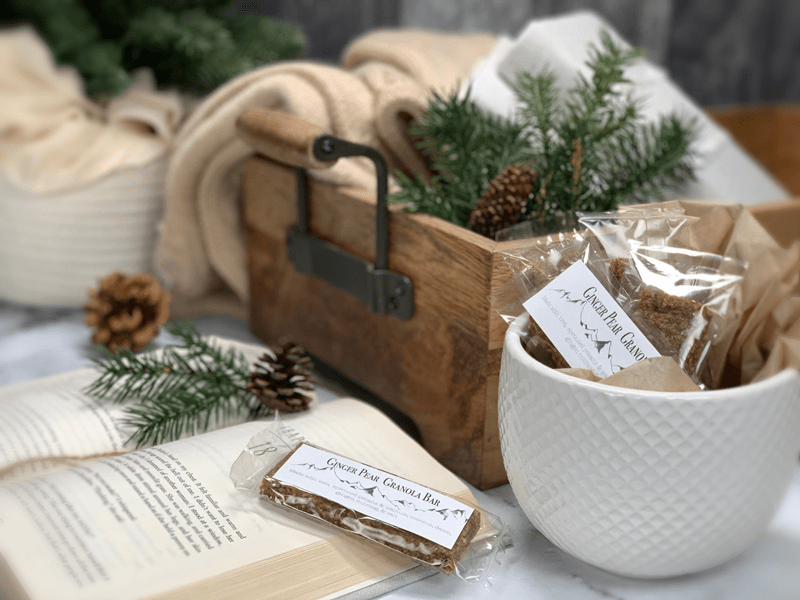
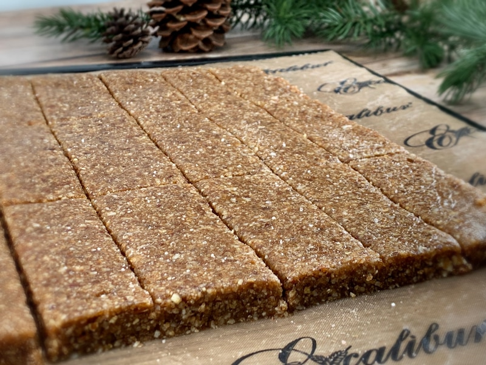

Ginger Pear Granola Bars
These eat-on-the-go bars will help to keep you full and satisfied as the day progresses. They are nutrient-dense without any added sugar. The pears alone add the perfect amount of sweetness that doesn’t leave you feeling sugared-out.

This recipe produces a simple, soft, and chewy granola bar. I made a batch of them and set them on the counter to cool after pulling them out of the dehydrator. When I walked by… one was missing. I thought to myself, “No, biggy, I have plenty to take some photos for the site.” Later in the day, I found myself moving the tray from one spot to another as we prepared our meals and snacks. Each time I moved it, a bar was missing. I knew I had to get some photos taken if I was going to share the recipe.
Two days passed, things got delightfully busy, and I soon found that there were only two bars left on the tray! Whaaaa?! Well, fiddlesticks, it looks like I will need to make the bars again, but this time I will hide them until I get some photos! But you know… that’s just fine by me. I love it when I make foods that disappear quickly. It’s a true testament as to just how delicious it was. So eat up, my Bobby boy! Mama’s got more in the dehydrator.
Let’s Chat about Ingredients
Many of you may skip over this section, but can I ask for just a few more minutes of your time? I want this recipe to be as successful for you as it was for me… therefore I want to share some tidbits with you. First off, the pecans and walnuts – in the ingredient list, I mention to use them soaked. If you already have nuts that have been soaked and dehydrated, go ahead and use those, but don’t soak them again. You can use wet or dry nuts for this recipe.
High mineral sea salt. These bars are meant to have a slightly salty taste to them. Bob loves the mix of sweet and salty. But if this isn’t your thing… reduce it to half a teaspoon. The salt helps to amplify the pear sweetness, as well. When it comes to using fresh pears for this recipe, make sure that they are fully ripe as this will lend to a sweeter bar. Taste test the pears first. If the skins seem bitter to you (or are not organic), remove them. I was able to leave the skins on mine.
Lastly, let’s talk about the Medjool dates. I have spoken about this before, but I know that we have new readers filing in, so I never want to take any bit of knowledge for granted. So with that being said, it’s crucial to get into the habit of inspecting the insides of the dates. Once you have removed the pit, peer inside and check for any mold or critters. I don’t mean to gross you out, but it’s the reality when it comes to dried fruit.
Well, that about sums things up. I hope you enjoy these bars as much as we did. Please comment below. Have a blessed and happy day, amie sue
Ingredients:
Yields: 18 bars
- 2 cups (245 g) pecans, soaked
- 2 cups (100 g) unsweetened, dried coconut flakes
- 1 cup (106 g) walnuts, soaked
- 1 tsp (6 g) Himalayan salt
- 1 tsp (4 g) ground ginger
- 1/2 tsp (2 g) ground nutmeg
- 4 cups (638 g) diced, fresh pears
- 1 cup (130 g) Medjool pitted dates
Preparation:
- In the large food processor bowl, fitted with the “S” blade, add the pecans, coconut, walnuts, salt, ginger, and nutmeg. Pulse a few times to disperse the spices.
- If you already have nuts that have been soaked and dehydrated (just waiting to be used), you don’t need to rehydrate them. I always have my nuts and seeds presoaked and dehydrated, so that is what I used.
- Remove the lid and add the dates and diced pears.
- Make sure that ALL pits have removed. Double … triple check. It takes ONE pit to ruin a batch.
- Inspect all dates as well. After removing the pit, check the insides of the date for any mold or critters. I don’t mean to gross you out; it’s just the facts of life.
- If the dates are really dry, it will best to soak them in warm water, so they blend more evenly. Be sure to hand squeeze any excess water from them before adding.
- Taste test the pears. If the skins seem bitter, move them before adding the pears to the batter.
- Line the dehydrator sheet with a nonstick sheet and place the batter in the center. Place a sheet of plastic wrap over the top and with a rolling pin, roll out to roughly 1/4″ thick. You can control how thick or thin you want it.
- Square up the edges and score the bars into desired sizes.
- Dehydrate at 145 degrees (F) for 1 hour, then reduce to 115 degrees (F) for roughly 10 hours. Again, you can control how moist you wish for them to be.
- These bars won’t be crunchy… they will hold shape and will be chewy.
- Storage
- Store on the counter for 5-7 days in a sealed container.
- Store in the fridge for up to 14 days.
- Store in the freezer for up to 1 month.
Culinary Explanations:
- Why do I start the dehydrator at 145 degrees (F)? Click (here) to learn the reason behind this.
- When working with fresh ingredients, it is essential to taste test as you build a recipe. Learn why (here).
- Don’t own a dehydrator? Learn how to use your oven (here). I do, however honestly believe that it is a worthwhile investment. Click (here) to learn what I use.

© AmieSue.com